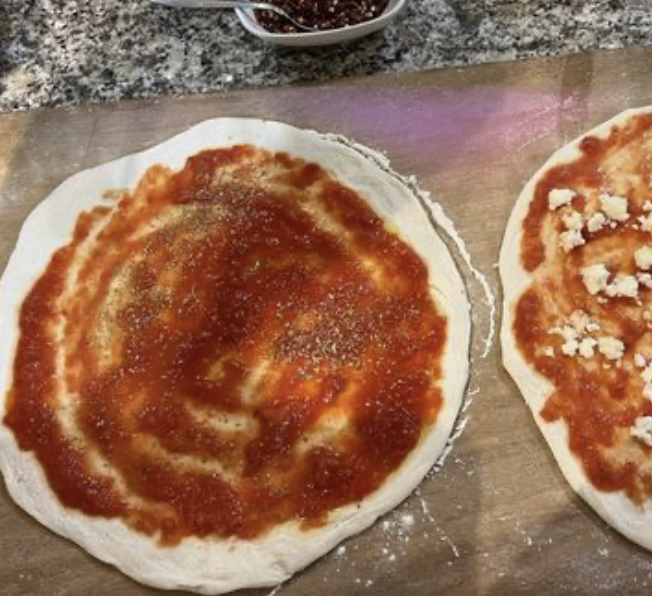
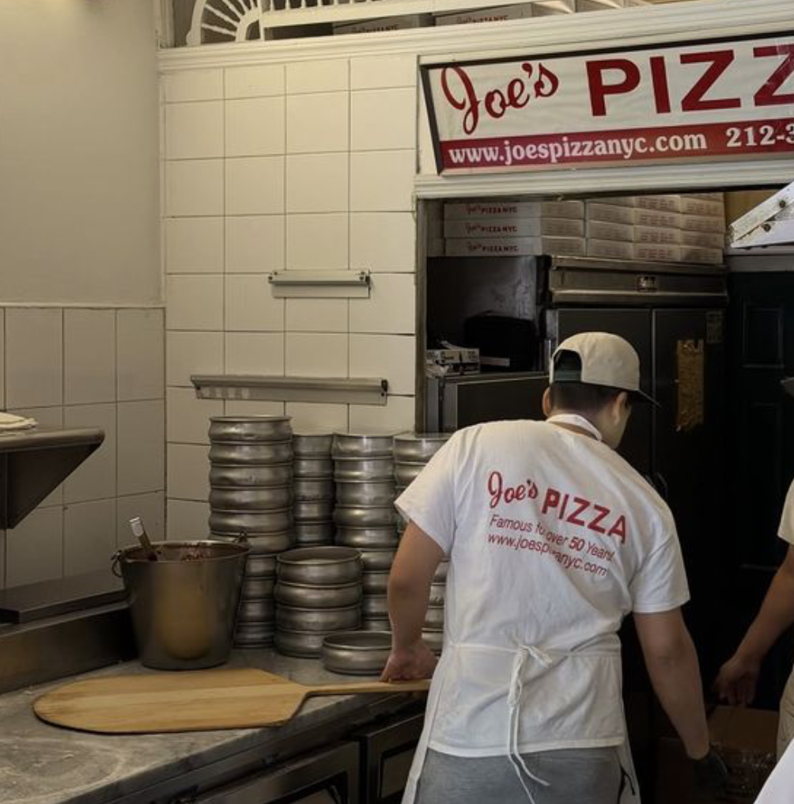

Vi bruger økologiske tomater
Tomater smager af sommer og sol. Derfor bruger vi økologiske tomater til vores tomatsovs. vi smager det til med friske basilikumsblade, hvidløg samt lidt salt og pepper. En rigtig god tomatsovs er essentiel for en god pizza.

Alle pizzaer bliver tilberedt med hjemmelavet tomatsovs, dansk mozzarella ost og bagt i en god gammeldaws brændefyrret stenovnbragt til Danmark fra Napolion